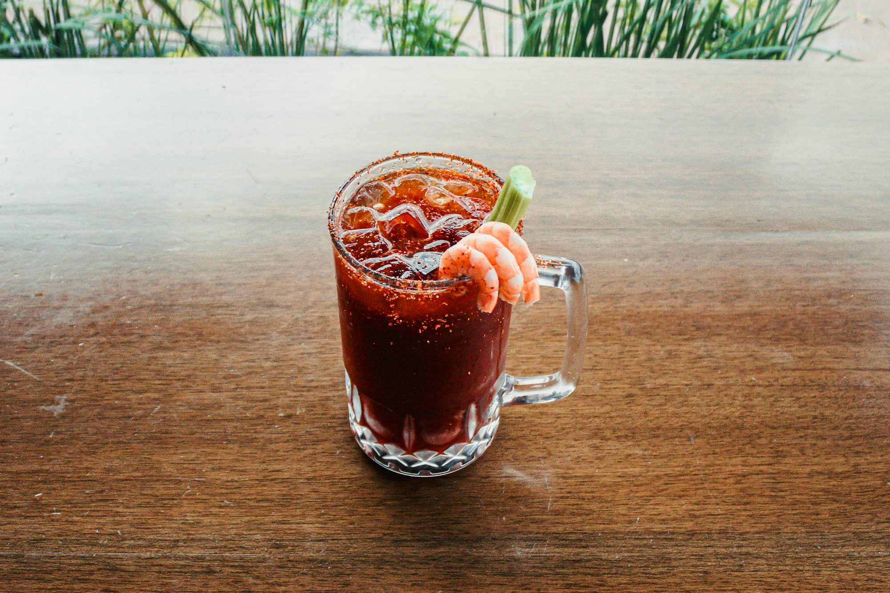
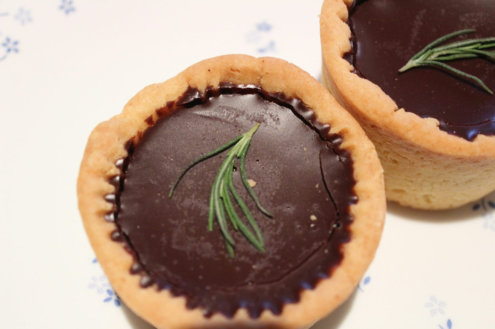

Juice Trends of 2024: Flavor, Wellness, and Sustainability
A comprehensive overview of the latest trends in the juice industry for 2024, focusing on innovative flavors, health benefits, and sustainable practices that shape consumer preferences.Visual narratives



Exploring the World of Global Cuisines: A Culinary Journey
This article takes readers on a journey through various global cuisines, highlighting unique dishes, ingredients, and cooking techniques that define culinary traditions around the world.
25-11-16
Fruits Around the World: A Culinary Journey
An exploration of how different cultures utilize fruits in their cuisines, highlighting unique dishes and preparation methods.
Liam Thompson
25-06-09

Exploring the Evolution of Desserts: From Classic Treats to Modern Innovations
An exploration of how desserts have evolved over time, highlighting classic favorites and the innovative trends shaping the future of the dessert industry, including health-conscious options, global influences, and sustainability.
25-10-13
Liam Foster
25-10-15

A Culinary Journey: Exploring the World of Poultry
This article delves into the diverse and delicious realm of poultry, highlighting various types, their unique flavors, and culinary uses.
Lucas Bennett
25-06-13
A Sweet Exploration of Cookies: From Classic Recipes to Innovative Treats
This article delves into the rich history, diverse types, and delightful recipes of cookies, showcasing their evolution and timeless appeal.
Liam O'Sullivan

Exploring the Unique Themes of Modern Cafés
This article takes a deep dive into the various types of cafés around the world, highlighting their unique themes and the experiences they offer to patrons.
Liam Johnson
25-08-04

Café Culture: A Journey Through Unique Dining Experiences
This article explores the diverse world of cafés, highlighting their unique themes, offerings, and the experiences they provide to patrons.
Sofia Mendoza
25-06-08
Desserts of the World: A Culinary Exploration
This article takes readers on a delightful journey through the diverse types of desserts around the globe, highlighting their unique flavors, cultural significance, and the joy they bring to our lives.
Emma Thompson
25-09-15
Exploring the Rise of Pet-Friendly Cafés: A Pawsitive Trend
This article examines the growing popularity of pet-friendly cafés, exploring how they create welcoming spaces for pet owners and their furry companions while fostering community bonds.
Ella Thompson
25-06-27